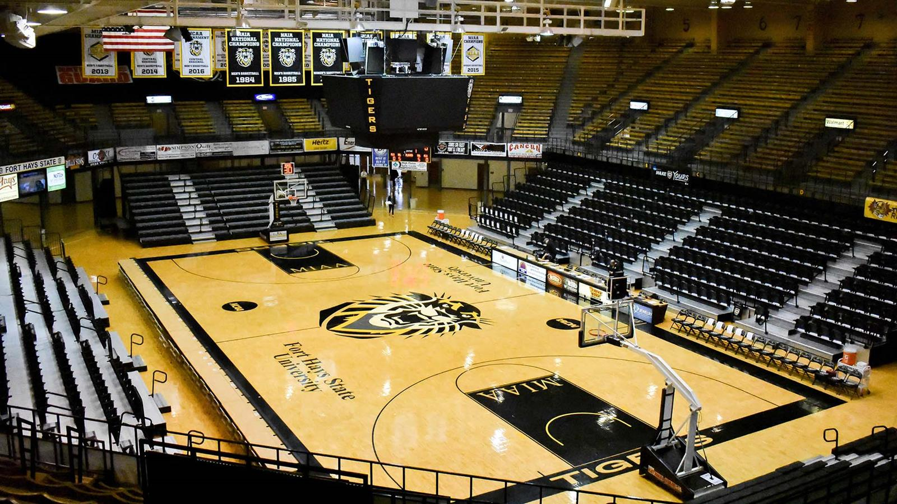
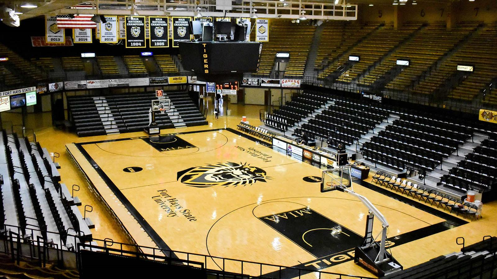

News: Gross Memorial Undergoes Roof Repairs
Fort Hays State's Gross Memorial Coliseum finally felt the Kansas wind. The roof of the structure is currently under repairs due to nearly 50 years of weathering. Workers have been on site for about a month and a half as repairs are expected to last a while.
The Coliseum was built in 1973 and can hold over 6,000 spectators. It is named after FHSU legendary coach and athletic director Paul "Busch" Gross.